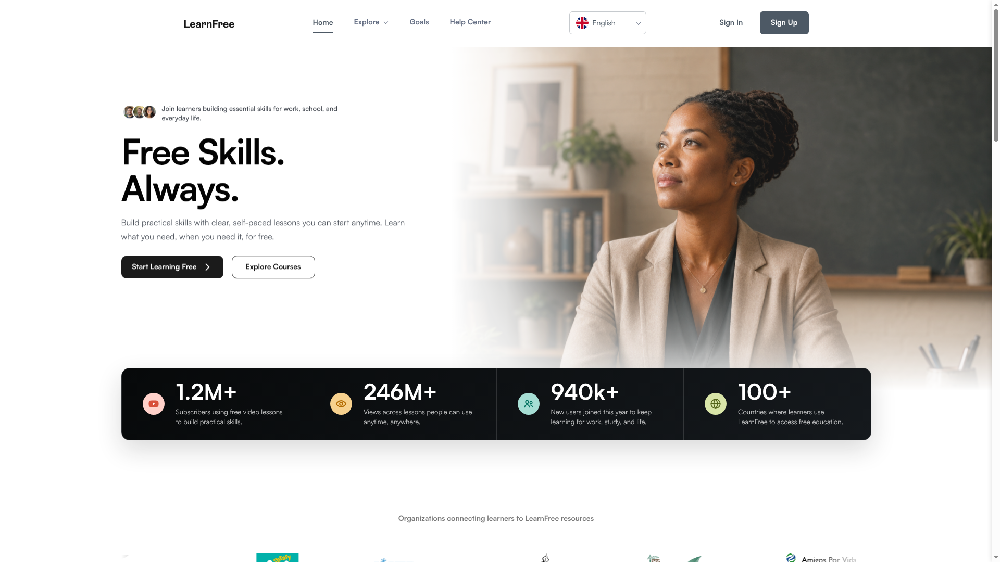
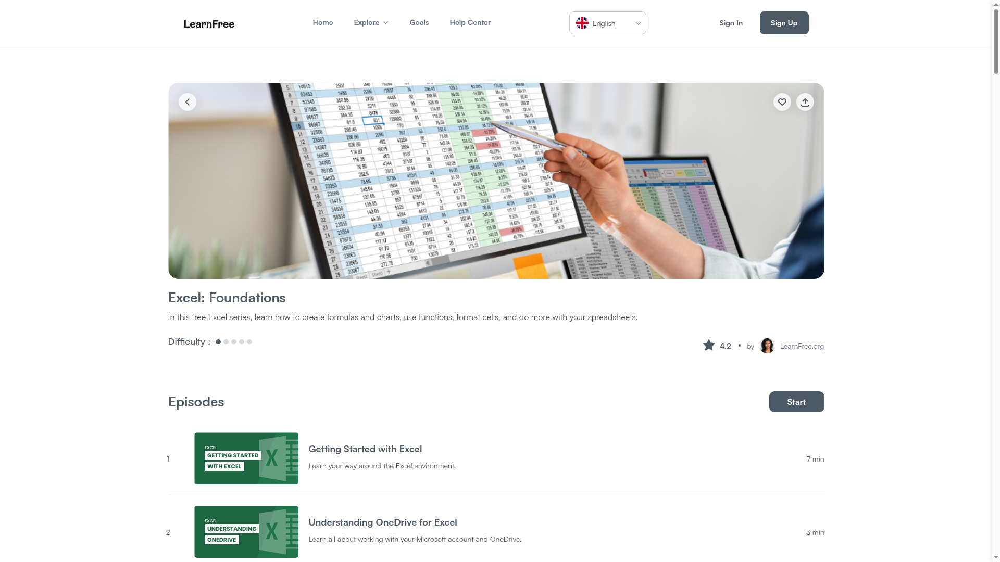
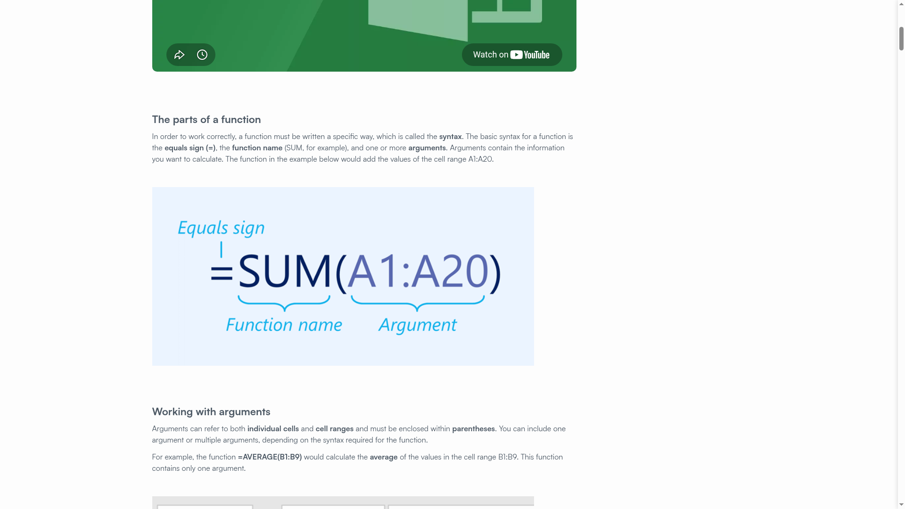

FREE LEARNING · PRACTICAL DIGITAL SKILLS
LearnFree: learn Excel, one lesson at a time
LearnFree, the updated destination for GCFGlobal, has structured lessons for computer basics, Office, Google tools and job-search skills. We tried its public Excel lessons and a quiz question without creating an account.
Who will find it useful?
If you can use a phone but want more confidence with a computer or spreadsheet, a course with a fixed sequence can be easier to follow than collecting unrelated tips. English-using students, job seekers and people returning to office work in Kerala and elsewhere in India can use the public lessons as a practice resource.
The concrete difference from asking an AI chatbot is the prepared lesson order, illustrated explanations, practice links and quizzes. A chatbot can still help explain a confusing step. Neither replaces trying the skill yourself.
This is a third-party education site, not an Indian government scheme, a Microsoft product or a job-placement programme. Its lessons do not give you an Excel software licence.

1. Choose a topic, then a series
On LearnFree's home page, choose Explore Courses or scroll to Explore skills by topic. Computers covers basic skills. Microsoft Office covers Excel, Word and PowerPoint. Google has its own topic area. The Job Search includes resume writing and interviewing skills.
For our example, open Excel: Foundations. Its current outline lists 36 episodes, moving from getting started and cell basics through formulas, sorting, charts and PivotTables, then an Excel quiz. That is the outline we inspected, not a promise that we completed or validated every episode.
The site also lists Excel 2016 and older-version material. Software menus change. Match the lesson to your version, and do not assume an older screenshot is the exact layout in today's Microsoft 365 app.

2. Open a lesson and practise a small task
Choose an episode title, or use Start. We opened the Functions lesson. It loaded text, diagrams, an embedded video preview and a practice-workbook link while we were signed out.
The lesson explains the parts of a function and shows step-by-step examples. Work through a small section, then try it in a spreadsheet you are allowed to edit. Use made-up or non-sensitive practice data rather than a real customer list, bank statement or private work file.
The practice-workbook link in this lesson points to Google Sheets. We did not open that external file or test downloading, copying or editing it. LearnFree's Help Center says to download a practice file and open the saved copy if the browser view is read-only. Check the actual file's access options instead of assuming every practice link will behave the same way.

3. Use the quiz as feedback, not a qualification
Return to the series outline and choose Excel Quiz. In our test, Next was disabled until we selected an answer. We chose the cell answer to the first question and used Next. The answer changed to green correct feedback.
That confirms one working public question and feedback interaction. We did not finish the quiz, verify a final score, save progress to an account or earn a certificate. Do not treat our screenshot as a course-completion result.
Accounts, privacy and language
A free account can be useful for goals and progress according to LearnFree, but it was not needed for our public sample. We did not create one. Its terms say account users must be at least 18 or have a parent or legal guardian's express consent.
Its privacy policy describes account information, usage data and cookies. We rejected optional cookies in our test; that does not mean the site has no data collection. External videos and practice-file services have their own access and privacy conditions.
We tested English content. The current navigation also showed Spanish. We did not verify Hindi or Malayalam lessons, translations, captions or support. Older GCFGlobal descriptions and links may not describe the current platform exactly.
Exactly what we checked
- Opened the current LearnFree home page and confirmed that the old GCFGlobal English entry reached the updated learning site.
- Read the Excel: Foundations outline and opened its Functions lesson without signing in.
- Used Next through three short parts of a separate introductory Excel episode, then tested selection and correct feedback on the first Foundations quiz question.
- Opened the Functions lesson at a 390 × 844 phone-sized view. It initially showed loading placeholders, then loaded readable text and a video preview. This was a browser-sized check, not a physical-phone test.
We did not play the videos, open the Google practice workbook, finish a full course, test an account, obtain a certificate or audit the whole library. The public page captures are evidence of those limited checks, not proof that every lesson or link works.
The four figures are four distinct scenes from the real site. Their logos, poster and alternate phone crops are not counted as extra photos.
Sources and further reading
- LearnFree home and topic links.
- Excel: Foundations outline, plus the Functions lesson and quiz tested above.
- LearnFree Help Center: free access, accounts, practice files, software versions and selected certificates.
- Terms and Privacy Policy, both labelled updated 1 January 2026.
- SDM Foundation's updated GCF/LearnFree note, dated 3 September 2026, independently notes the site change.
Screenshots and the small official wordmark belong to LearnFree and the other rights holders shown. Shown with attribution in this independent educational guide. AiCoN is not affiliated with LearnFree or Microsoft.